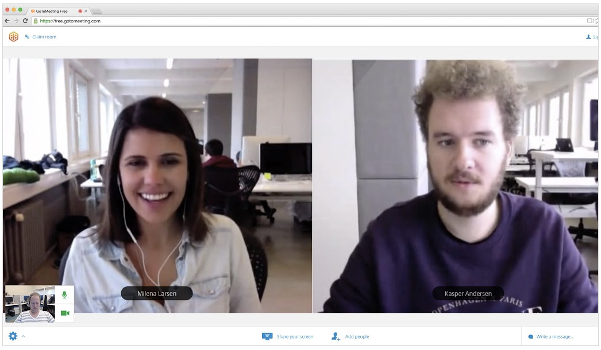
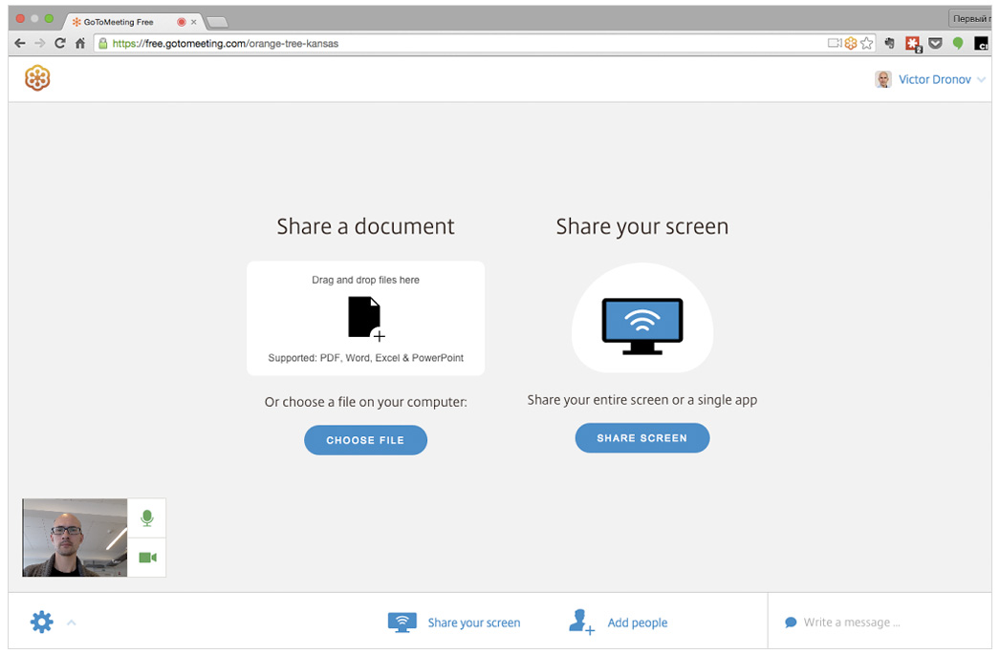
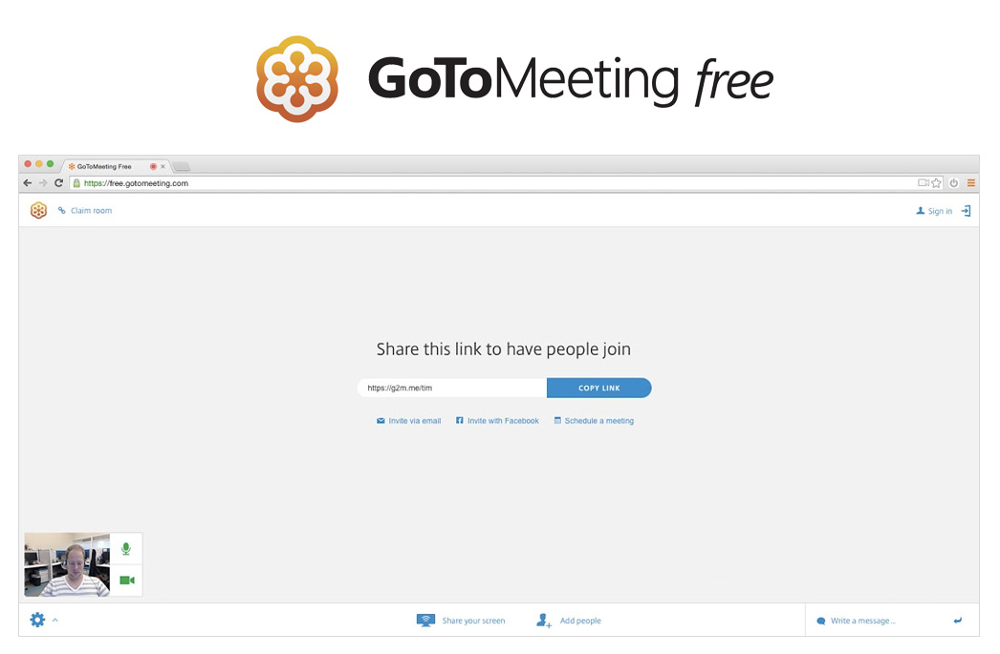

Citrix Built GoToMeeting Free on Heroku to Easily Scale Their Web-Based Meeting Service
Easy-to-use, simplified video conferencing for professionals and consumers
Inspiration has struck, or a roadblock has surfaced – and you need to meet with your colleagues pronto. A brief discussion or feedback on a document is all you need to move forward. If you can’t meet at their desk or if they are thousands of miles away, you want to connect with them online in just a few clicks. If your company has not provisioned a full-service conferencing solution such as GoToMeeting by Citrix, how can you painlessly set up an ad hoc meeting? Your goal is to jump right into the discussion so you can quickly get the input you need and maintain the smooth pace of your workflow.
Ad Hoc Meetings for Anyone, Anywhere
The business mobility experts at Citrix wanted to broaden their virtual conference offerings and provide a lightweight, low-barrier solution that could work for anyone. They developed GoToMeeting Free, a web-based video chat tool that allows business associates or friends and family to easily connect anywhere in the world. Users simply need an Internet connection and the latest supported browser – no purchase, downloads, or even login required.

GoToMeeting Free is ideal for quick sync-ups and meetings with up to three participants. The premium versions of Citrix’s industry-leading GoToMeeting Pro software are designed for larger meetings that need more robust functionality to support more professional, structured meetings. GoToMeeting Free can complement premium versions of GoToMeeting, or work on its own as a powerful communication tool.
Your Virtual Conference Room, Built on Heroku
To execute on their web-based product vision, Citrix spun up a new team and allowed them to operate like a start-up within the larger enterprise. Based in Copenhagen, Denmark, this new team needed the same flexibility, agility, and speed that start-ups rely on in order to rapidly develop and launch the new product. The team established a culture of daily deployment and had the freedom to choose the tools and technologies that worked best for their needs, with a preference for SaaS solutions whenever possible.
We deploy on a daily basis, and Heroku makes it easy for us to test and release new features and improvements as fast as we can develop them. Victor Dronov, GoToMeeting Free Product Manager, Citrix

Although the GoToMeeting Free team had no prior hands-on experience with Heroku, Salesforce platform and products are widely used throughout the company and Heroku came highly recommended by other groups at Citrix. The team greatly appreciated Heroku’s ease of use and ability to seamlessly scale along with their rapid growth. Compared to AWS, Heroku’s PaaS solution required significantly less set up and maintenance effort, allowing the team to focus on developing a differentiating user experience.
We felt comfortable with Heroku due to its industry reputation as a market leader – for us it was the obvious choice. Victor Dronov, GoToMeeting Free Product Manager, Citrix
GoToMeeting Free is structured around an open API, which is not currently available to the public, but used internally and for certain integrations. They used Node.js to build the API, and Javascript and AngularJS to build the web front-end. A big part of the stack leverages something they call “signaling” – a library for peer-to-peer user connection between browsers, which enables the best connections for audio, video, and screen-sharing – all pure Javascript.
Both the API and the front-end web experience are hosted on Heroku, including production and staging environments. Amazon Cloud is used to handle the audio and video traffic and the Firebase backend-as-a-service for real-time synchronization. The team uses Heroku add-ons New Relic APM to monitor and tune their app, and Logentries to analyze any current issues and performance.
We are growing fast, and Heroku allows us to easily scale and keep pace with our expanding user base. Victor Dronov, GoToMeeting Free Product Manager, Citrix
App Experience
The GoToMeeting Free web app is streamlined and elegant with some playful elements that help to create a friendly and enjoyable experience. From a simple start page, users just click one button to start a meeting. They are assigned a unique URL for the meeting that they can share with their invitees via chat, email, or Facebook. Once participants join the meeting, users can see a video feed of each other and can communicate via audio or the chat interface.

No account or sign up is required, so anonymous participants are assigned a playful temporary username (e.g. “Curious Ninja”) and unique meeting URLs are comprised of random word sets. For users who choose to register and log in, their own name will be displayed as their username, and they can choose to use their own name as the identifier in the meeting URL (essentially creating their own “meeting room”). They can also create their own avatar, and block their room to strangers.
Sharing features allow users to share their screen or a particular document only, and scheduling features allow them to download a browser extension to add the meeting to their Google Calendar or add it to Microsoft Outlook. A number of integrations allow users to create or join GoToMeeting Free meetings from many popular third-party tools such as Podio, HipChat, Launchbar, Slack, Alfred. As the product evolves, the team is working on ties to the premium products that will help users seamlessly convert to GoToMeeting Pro.
Setting up a meeting no longer means breaking your stride. GoToMeeting Free is faster than picking up the phone.
More Stories


Have a question? Give our sales team a call: +1 (866) 278-1349.